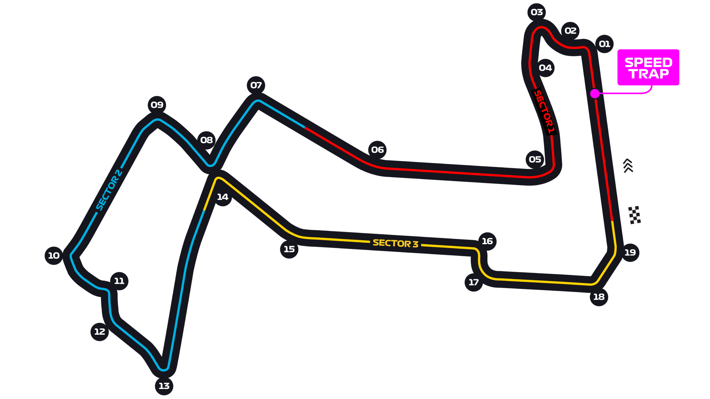

Marina Bay Street Circuit Circuit Guide
The most physically demanding race of the year. A bumpy, humid, walled night race run at close to 100% humidity, where concentration fades before the tyres do. Maximum downforce, minimum margin for error.
Circuit history & Grand Prix editions
Pre-weekend record book: results before 2026-10-11. This event’s result is not included.
The 2026 event is scheduled to be the 17th World Championship Grand Prix at this venue and the 17th Singapore Grand Prix across all venues.
First race here: 2008 Singapore Grand Prix. Most recent before this weekend: 2025 Singapore Grand Prix.
| Grand Prix name / series at this venue | Completed editions | Years |
|---|---|---|
| Singapore Grand Prix | 16 | 2008, 2009, 2010, 2011, 2012, 2013, 2014, 2015, 2016, 2017, 2018, 2019, 2022, 2023, 2024, 2025 |
Most driver wins here
- Sebastian Vettel: 5 wins2011, 2012, 2013, 2015, 2019
Most constructor wins here
- Mercedes: 5 wins2014, 2016, 2017, 2018, 2025
Overtaking at this circuit
Up to the ten most recent completed Grands Prix at this venue, before 2026-10-11. These are recorded on-track passes, not places gained between the grid and the finish.
Source coverage and freshness
Collection scope below is separate from this pre-weekend venue table. A source check is not a new race observation. Collected races on or after the selected weekend stay excluded from its history.
- RacingPass archive: archive; 33 sourced races, latest race 2024-11-24. Reviewed archive through 2024; not an ongoing current-season feed. Routine collection no longer polls the stale/blocked publisher. Community-counted on-track passes for position. Excludes lap one, pit-stop gains, passes of cars off track/spun or with major reliability problems, and lapping/unlapping. No separate DRS breakdown is provided here. Last successful collection: 2026-09-19T17:41:14+00:00.
- Official F1 Fantasy scoring overtakes: automatic; 14 sourced races, latest race 2026-09-13. F1 Fantasy-defined legal on-track passes, excluding a passed car entering/in the pit lane, suffering car failure or going unreasonably slowly. The rules do not promise to exclude lap one. Race scoring events only, not positions gained or Sprint points; not comparable with lap-one-excluded community counts. Last successful collection: 2026-09-19T17:41:14+00:00.
- Sundaram R / @f1statsguru - 2025: reviewed-static; 24 sourced races, latest race 2025-12-07. Static 2025 chart, visually reviewed; future charts require a new review. Publisher's pure overtakes: excludes opening-lap gains, crashes, mechanical failures and pit stops. Treatment of team orders and lapping is not established; do not merge with RacingPass or Fantasy counts. Last successful collection: 2026-09-19T17:41:14+00:00.
Sundaram R / @f1statsguru - 2025
Publisher's pure overtakes: excludes opening-lap gains, crashes, mechanical failures and pit stops. Treatment of team orders and lapping is not established; do not merge with RacingPass or Fantasy counts.
| Previous edition | On-track overtakes | Coverage / source |
|---|---|---|
| 2025 Singapore Grand Prix | 26 | Sundaram R / @f1statsguru - 2025 |
| 2024 Singapore Grand Prix | Not covered | No count in this source |
| 2023 Singapore Grand Prix | Not covered | No count in this source |
| 2022 Singapore Grand Prix | Not covered | No count in this source |
| 2019 Singapore Grand Prix | Not covered | No count in this source |
| 2018 Singapore Grand Prix | Not covered | No count in this source |
| 2017 Singapore Grand Prix | Not covered | No count in this source |
| 2016 Singapore Grand Prix | Not covered | No count in this source |
| 2015 Singapore Grand Prix | Not covered | No count in this source |
| 2014 Singapore Grand Prix | Not covered | No count in this source |
Factual totals visually reviewed from Sundaram R (@f1statsguru), published 24 December 2025. Independent statistics, not official FIA data. No underlying pass ledger or open redistribution license was established. Source artwork is linked, not republished. Source and counting rules · Original reviewed chart.
RacingPass archive
Community-counted on-track passes for position. Excludes lap one, pit-stop gains, passes of cars off track/spun or with major reliability problems, and lapping/unlapping. No separate DRS breakdown is provided here.
| Previous edition | On-track overtakes | Coverage / source |
|---|---|---|
| 2025 Singapore Grand Prix | Not covered | No count in this source |
| 2024 Singapore Grand Prix | 30 | RacingPass archive |
| 2023 Singapore Grand Prix | 42 | RacingPass archive |
| 2022 Singapore Grand Prix | 16 | RacingPass archive |
| 2019 Singapore Grand Prix | Not covered | No count in this source |
| 2018 Singapore Grand Prix | Not covered | No count in this source |
| 2017 Singapore Grand Prix | Not covered | No count in this source |
| 2016 Singapore Grand Prix | Not covered | No count in this source |
| 2015 Singapore Grand Prix | Not covered | No count in this source |
| 2014 Singapore Grand Prix | Not covered | No count in this source |
Race-total statistics reported by RacingPass; not official FIA statistics. Article prose and individual pass logs are not reproduced. Source and counting rules.
Each source uses its own stated counting rules; different definitions are not combined into one average. Circuit layouts, regulations, DRS, weather and shortened races can change passing totals. This sample is context, not a forecast of overtaking or a rating of race quality. Sprints and this weekend’s race are excluded.
Overtaking collection last attempted 2026-09-19T17:41:14+00:00.
Race results and venue identities derived from F1DB v2026.14.0 · CC BY 4.0. World Championship Grands Prix before 2026-10-11; this weekend and sprints excluded. Venue totals combine all F1DB layouts of this circuit. GP editions follow F1DB identities: some renamed titles share one historical series. These are pre-weekend records, not live all-time totals. Source last checked 2026-09-19T18:18:59+00:00.
FIA official maps & race-director notes
Official source; curated transcription may await review. Linked PDFs are the authority. Discovery does not extract or verify numeric values, and does not replace the curated material below.
Automatic discovery has not yet been recorded. This does not mean the FIA has not published documents.
Circuit map

Corners that matter
Turn 1 — Sheares
Heavy braking off the start straight; the main passing opportunity.
Turns 13–16
Quick, walled sequence that punishes any imprecision immediately.
Turn 14
Traditional late-braking lunge point where the leaders often get held up by traffic.
Where the passes happen
Difficult. Track position is close to decisive, so qualifying and the undercut dominate. Safety cars have historically been near-inevitable and are the most reliable source of position change.
What it does to the tyres
Traction and braking dominate; low average speed keeps energy moderate but the surface is bumpy and warm-up on restarts matters enormously.
Worth knowing
Circuit notes
- First held in 2008 as Formula 1's first night race.
- Races here regularly run close to the two-hour limit.
- Driver weight loss across the race is among the highest of the season — a reliable colour point.